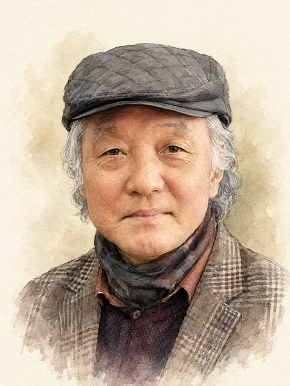
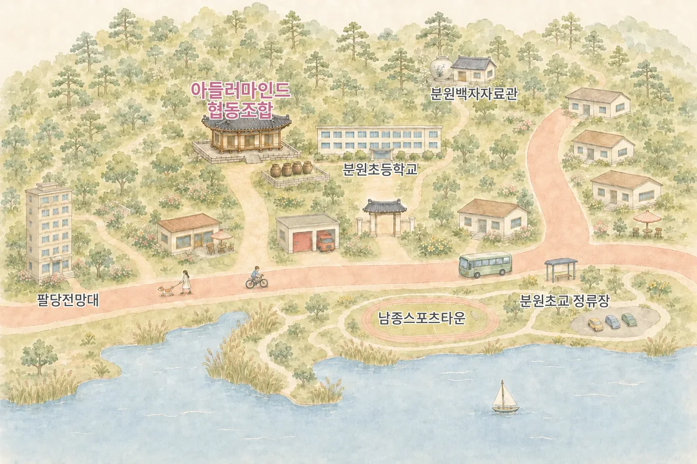

이 짧은 찰나의 순간으로 흘러들어
우리가 함께 딛고 선 이 순간이
영원이 머무는 유일한 정원입니다
모든 답은 저 먼 곳에 있지 않고
내가 마주하는 바람, 스치는 인연
그 평범함 속에 우주가 숨을 쉽니다
세상을 사랑하는 일임을 압니다
하여 존재하는 그 자체만으로
지금 여기 우리는 온전한 우주입니다
명예고문 인사말

오 익 수 아들러마인드 협동조합 명예고문한국아들러상담학회 명예회원
광주교육대학교 명예교수 · 전남대학교 교육학 박사
아들러 개인심리학은 생활 안에서
평등과 협력의 공동체를 지향하는,
실제적인 힘을 가진 심리학입니다.
갈등으로 혼란스러운 현대사회에서
개인이 스스로의 부족함을 수용하고 사랑하며,
서로를 격려하여 용기를 낼 수 있도록 돕는
아름다운 철학과 지향을 품고 있습니다.
한국아들러상담학회는 2000년 아들러상담연구회에서 출발,
2015년 학회를 창설하여 올해로 십여 년이 되어갑니다.
그간 배출한 여러 영역의 상담자들이
삶의 곳곳에서 아들러의 지향을 알리며 살아가고자
협동조합을 창설한 것을
기쁜 마음으로 축하하고 격려합니다.
생활 속의 건강함, 기여와 협력,
성장과 번영을 이루어가는 다양성의 공동체.
그 공동체를 살아가는 아들러리안으로서
먼저 모범을 보여주시리라 믿습니다.
가정과 학교에서, 여러 공동체와 갈등하는 세대 속에서,
각자의 고유한 가치와 아름다움으로
삶을 사랑하며 살아가는 일에
최선을 다해주시기를 바랍니다.
아들러 마인드.
작고 소박한 이들을 사랑했던 아들러의 그 마음이
모든 이들의 생활 속에서 빛이 되어 피어나기를 기원합니다.
아들러마인드 협동조합은
우리는 각자 다른 곳에서, 다른 방식으로 상담하고 가르쳐온 사람들입니다.
그런 우리가 아들러를 만나 협동조합을 선택한 이유는 하나입니다
— 아들러 심리학은 상담이론에 그치지 않는, 살아가는 삶의 태도를 요청하기 때문입니다.
경쟁 대신 협력을, 소유 대신 기여를,
결과보다는 과정을, 불완전함을 수용하며
현재의 우리를 격려하며 온전함으로 나아가는
삶의 태도를 배우는 곳
— 아들러마인드 협동조합은 그 실천의 장입니다.
아들러마인드의 7가지 약속
- 우리는 인간의 불완전함이 그를 성장으로 이끄는 원동력이 됨을 믿습니다.
- 우리의 다름은 다양성과 온전함을 더하는 창조의 기회로 받아들입니다.
- 우리는 모든 이들이 자신만의 독특한 창조성으로 삶을 선택하고 있음을 이해합니다.
- 우리가 만나는 모든 사람들과 평등한 관계 속에서 민주적인 상담을 위해 노력합니다.
- 우리는 한국아들러상담학회를 통해 지속적인 전문성을 갖추도록 노력하여
변화하는 사회에 실천적이고 건강한 대안을 찾아갈 것입니다. - 우리의 활동이 나와 공동체와 사회의 건강함에 기여할 수 있도록 노력할 것입니다.
- 우리는 서로를 격려하며 함께하는 협력의 삶을 통해 아들러리안의 정신을 살아갑니다.
아들러마인드의 사람들
아들러마인드의 사람들은 사회적 평등과 사회적 관심을 꿈꾸었던 아들러의 비전으로 함께합니다.
하는 일
아들러마인드 협동조합은 다섯 가지 자리를 만들고 있습니다.
마음을 만나는 자리, 함께 배우는 자리, 나누는 자리,
머무는 자리, 그리고 이웃으로 이어지는 자리입니다.
어느 자리든 혼자 애쓰지 않아도 되는 곳이었으면 합니다.
COUNSELING마음을 만나는 자리
한 사람 한 사람과 마주 앉아 이야기를 나눕니다. 반복되는 나의 독특한 생활 패턴을 알아차리고, 좀 더 효율적인 방향으로 성장할 수 있도록 함께 길을 찾습니다. 혼자 오시는 개인상담과, 비슷한 마음을 가진 분들이 함께하는 집단프로그램을 엽니다. 대인관계, 명상, 타로를 통한 자기이해, 마음을 전하는 향기처럼 말로만 하지 않는 자리도 준비합니다.
EDUCATION함께 배우는 자리
부모님, 선생님, 상담하시는 분들뿐 아니라 아들러 개인심리학을 공부하고 싶은 모든 분께 열려 있습니다. 아들러 심리학을 바탕으로 한 부모교육 프로그램을 운영하고, 기관에서 요청하시면 찾아가 강의합니다. 자신의 독특한 패턴을 발견하고 서로를 이해하며 협력하는, 성장과 번영을 바라는 모든 자리에서 함께 배우고 성장하겠습니다.
CONTENTS나누는 자리
상담실에서만 오갈 이야기가 아니라고 생각합니다. 그래서 워크시트와 활동지, 교육 자료를 만들어 나누고, 뉴스레터로 아들러의 마음을 담은 편지를 보내드립니다. 온라인 강의와 영상도 조금씩 준비하고 있습니다. 멀리 계셔서 오시기 어려운 분께도 닿기를 바라는 마음입니다.
SPACE머무는 자리
팔당호 강가에 위치한 한옥에 상담 공간이 있습니다. 조합원들이 함께 쓰고 함께 돌보는 곳입니다. 오시는 분이 잠시 숨을 고를 수 있는 자리이기를 바라며 가꾸어 가고 있습니다.
COMMUNITY이웃으로 잇는 자리
지역에서 무료 특강과 캠페인을 열고, 학교와 복지관 같은 가까운 기관과 손을 잡습니다. 다른 협동조합들과도 만나 배우고 나눕니다. 아들러가 말한 사회적 관심은 결국 내가 속한 곳을 돌보는 마음이라고 믿기 때문입니다.
조합원들끼리도 매달 모여 공부하고, 사례를 나누고, 서로를 격려합니다. 먼저 우리가 그렇게 살아보지 않으면 누구에게도 권할 수 없다고 생각하기 때문입니다.
오시는 길

경기도 광주시 남종면 산수로 1652-16
네이버지도에서 보기- BUS
- 분원초교 정류장에서 내리시면 걸어서 닿습니다. 38-2 · 38-21 · 38-22 · 38-23 · 38-24 · 38-25 · 38-26 · 38-40 · 38-41 · 38-41A · 38-52
- STOP
- 가까운 정류장은 분원농협 · 분원초교 · 팔당수질개선본부입니다. 분원초교 정류장이 가장 가깝습니다.
- CAR
- 내비게이션에 분원초등학교 또는 남종스포츠타운을 넣으시면 됩니다. 주소로 찾으실 때는 산수로 1652-16입니다. 팔당호를 바라보는 한옥입니다.
- PARK
- 연구소 앞에는 주차 공간이 없습니다. 남종스포츠타운 주차장에 세우시고 걸어오시면 됩니다.
- CALL
- 오시는 길이 헷갈리시면 언제든 연락 주십시오. 0507-1328-4948